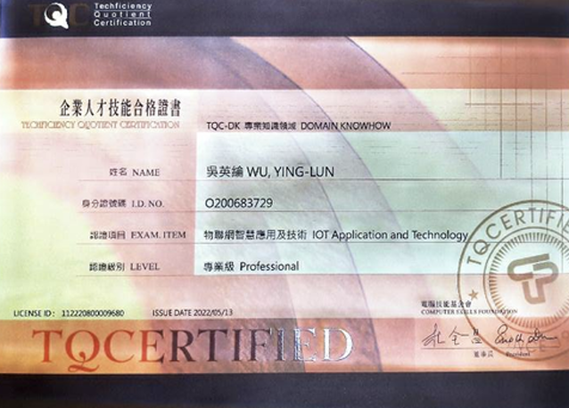
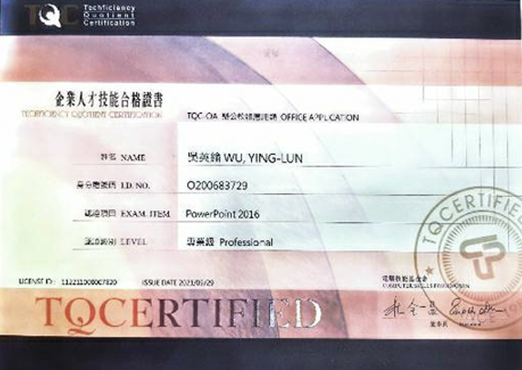

專業技能
物聯網&雲端技術
電腦軟體應用
會計資訊
吳英綸
「Do my best.」
利用課餘時間練習乙級的題目，包括Access、Excel、work等等，
由於乙級題目較難，最後總共考了兩次才通過。
先是從頭打好會計基礎，並每天練習不同情形的分錄題型，
搭配電腦進行報表的輸入和輸出，皇天不復有心人，最終通過考試。
在準備這項證照時努力瞭解雲端的運行方式和應用層面，用三周內的時間完成這項測驗。
這項對我而言也是較難的項目，原先對投影片的細項很不熟悉，但為了實現自己的目標而努力，幸運的拿到證照。
「當然要在熱血沸騰的青春裡釋放澎湃活力」
自從大學加入熱音社之後就一直擔任KB手的位置，
高中雖然是主唱，但是在大學我想要突破自我專攻我本身就會的樂器
也因為對音樂的熱愛而投入熱音社幹部的職位，希望自己可以越變越好。
「不要怕，學姊衝在前線保護你」
迎新宿營是我上了大學後的第一個大活動，在一次因緣際會下加入隊輔組的行列，
經過暑假兩個月的時間不畏風雨堅持做好自己的責任，
不斷的練習隊輔應該具備的能力，
在9月份成功帶領新生們參加活動，也從中學習到大群體的生活以及與人社交的能力。
「烤肉時除了美味的食物，還有活潑的吉祥物」
歷經宿營後的系上活動之一，在迎新宿營結束後我不間斷地投入這個活動當中，
加入的是活動組，除了和宿營一樣是小隊輔外，
也額外抽出時間和同是活動組的同伴們一同練習舞蹈，同樣收穫滿滿